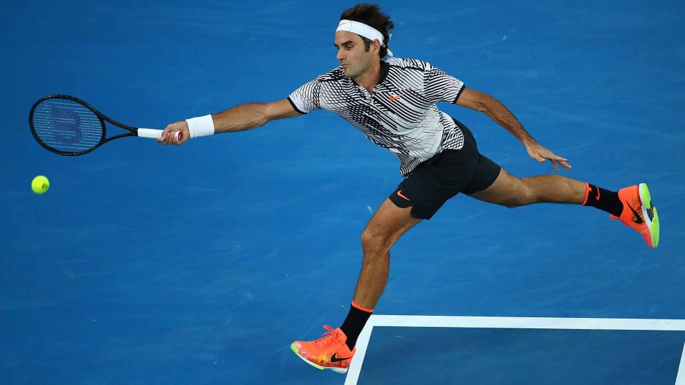

1-Roger Federer - 310 semanas como Número 1 del ATP
2-Pete Sampras - 286 semanas como Número 1 del ATP
3-Novak Djokovic - 282 semanas como Número 1 del ATP
4-Ivan Lendl - 270 semanas como Número 1 del ATP
5-Jimmy Connors - 268 semanas como Número 1 del ATP
6-Rafa Nadal - 209 semanas como Número 1 del ATP
7-John McEnroe - 170 semanas como Número 1 del ATP
8-Björn Borg - 109 semanas como Número 1 del ATP

Foto de Roger Federer.
aqui les dejo un de jugadas de tennis muy buneas.
el video fue subido por un canal llamado vitaldj
 Sitio oficiales
Sitio oficiales